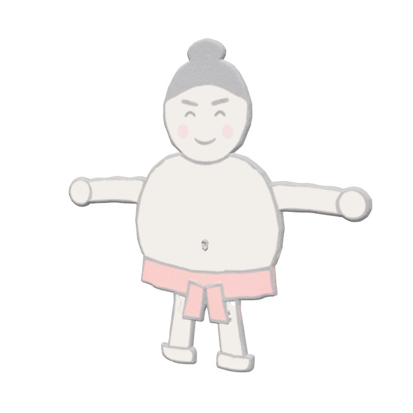
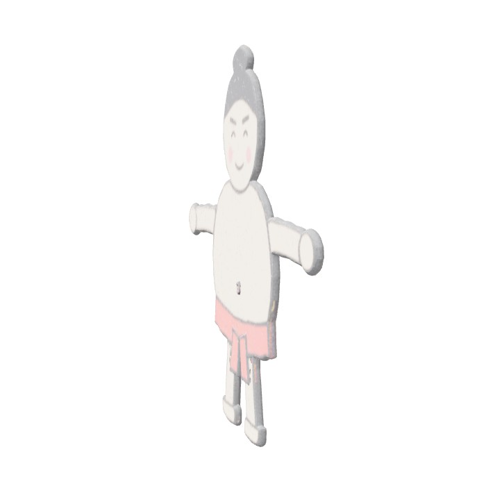
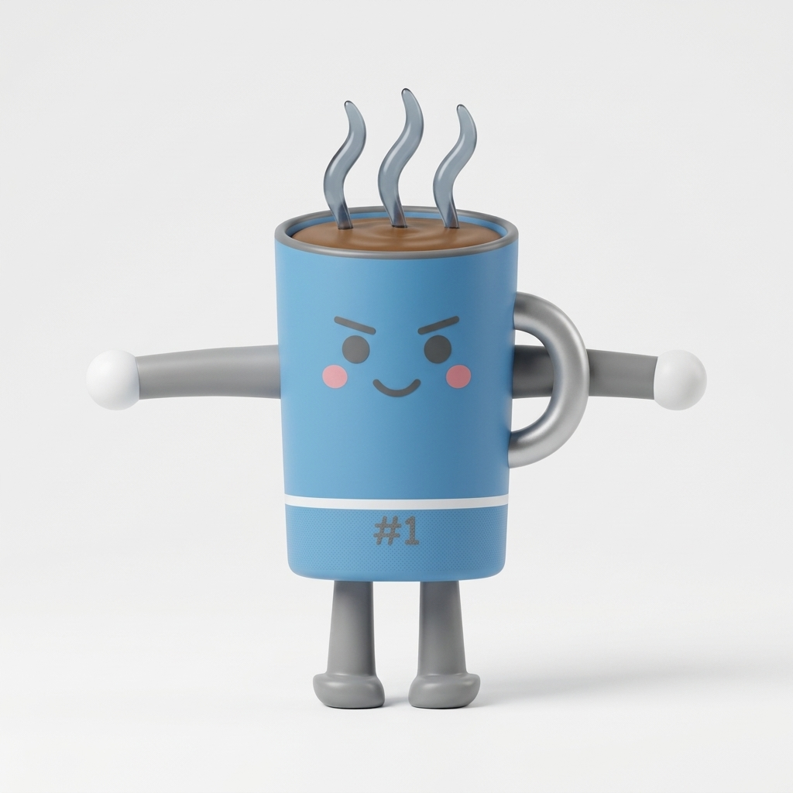
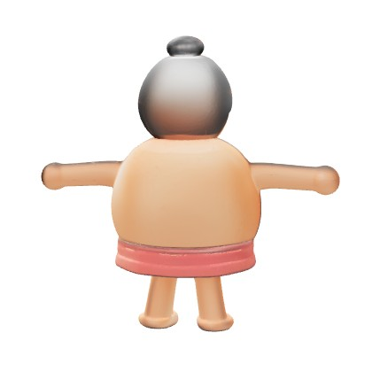
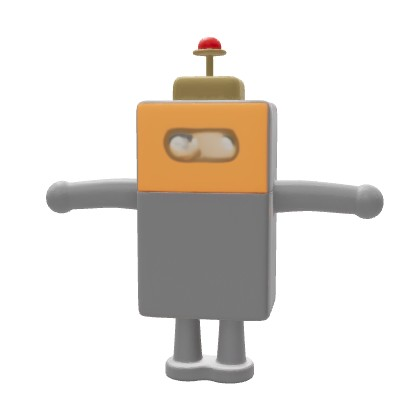
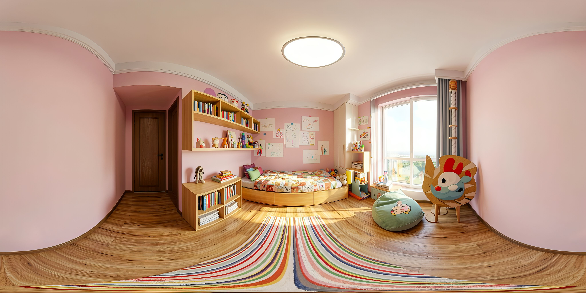

Fighters
Iterations (what didn't work first time)
Doodle straight to 3D vs. toy concept first



A flat crayon sketch has no depth cues, so every fighter now goes through a Lux3D "turn this doodle into a vinyl toy in a T-pose" image step first.
Mugsy v1 was rejected by the auto-rig

RIG_ELIGIBILITY_FAILED. The handle overlapped the right arm.Other changes: move set v2 swapped walk/jump for a sumo stance, a sprint and a swimming "flail" for falling off the desk; textures went from 4K PNG to 1024 px WebP with meshopt compression (about 15 MB to 0.8 MB per fighter).
G1 or G1-Turbo? Both, picked per toy




Every fighter was generated with both Lux3D versions from the same toy image, rigged and animated, then compared. Big Tofu and Pip use G1-Turbo; the other four keep G1. The live "draw your own" forge uses G1-Turbo for speed.
Desk traps (articulated by Lux3D: drag the slider to move the joint)
Pickups (drop onto the desk mid-fight; the toy that grabs one holds it on the right-hand bone of its Lux3D skeleton)
Desk props
The room (Aholo SpatialGen world generation)

Prompt: "A cozy, colourful child's bedroom in warm afternoon light: wooden floor with a striped rug, a bed with a patchwork quilt, shelves full of toys and books, crayon drawings taped to pastel walls, a big window with sunlight, a beanbag and a toy box." SpatialGen returned this 360° panorama plus a 3D Gaussian-splat version of the room; the game wraps the panorama around the desk so the toys feel toy-sized.
Every Aholo task behind this game
Logged by the build pipeline (pipeline/lux3d.mjs) as each task ran. Result links expire after 2 hours, so only IDs and timings are shown.
| When (UTC) | Step | Asset | Task ID | Seconds | Result |
|---|